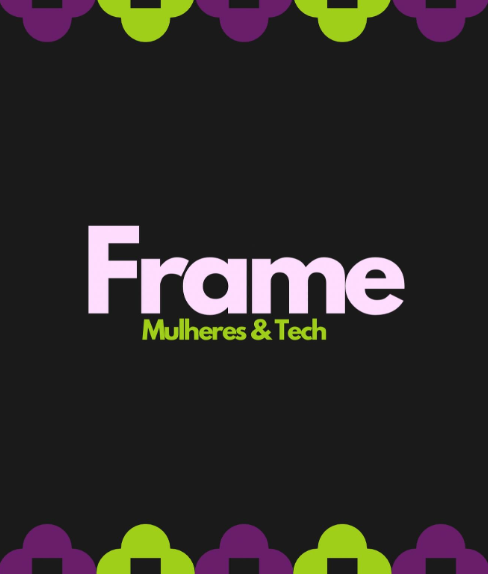

Frame
Voluntária · 2026
A FRAME | Mulheres & Tech é uma iniciativa independente de Brasília que busca fortalecer a presença feminina na tecnologia por meio de eventos, oficinas, palestras, mentorias e oportunidades de conexão. Como voluntária, tenho a oportunidade de fazer parte dessa comunidade, contribuir com suas iniciativas e acompanhar ações que incentivam o desenvolvimento e a participação de mulheres no universo tecnológico.
Fazer parte da FRAME tem sido uma oportunidade de crescimento pessoal e profissional, permitindo conhecer outras mulheres com interesses e objetivos em comum, ampliar minha visão sobre o mercado de tecnologia e acompanhar diferentes iniciativas da área. Essa experiência reforça a importância da colaboração, do compartilhamento de conhecimentos e da construção de um ambiente mais inclusivo, além de me motivar a continuar aprendendo e desenvolvendo minhas habilidades.
Links e matérias
Voltar